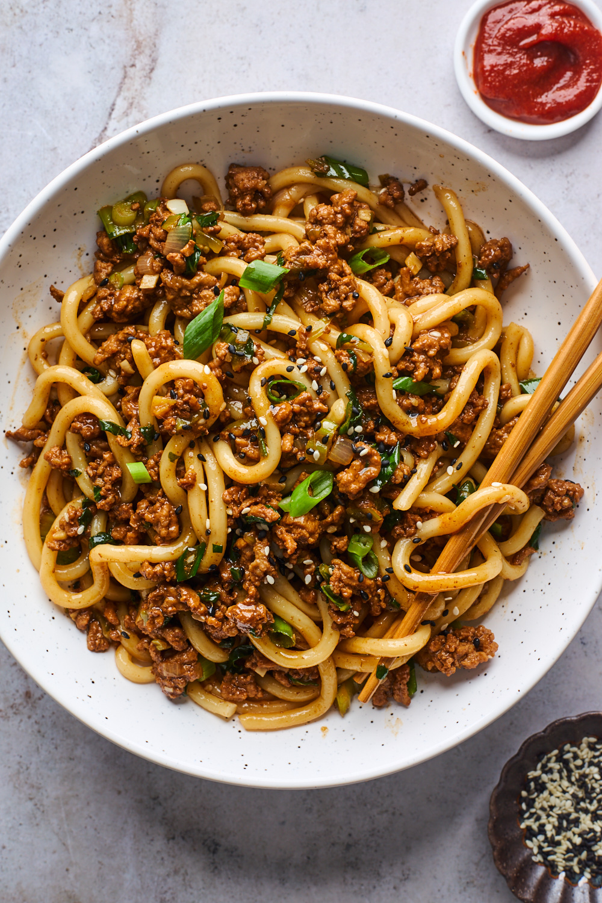

Spicy Pork Udon

Thick, chewy udon noodles with pork and bok choy
This udon dish is hearty and addictive! This ground pork stir fry noodles can be ready in less than 15 minutes. A delicious meat sauce with some greens tossed in and stirred with thick udon noodles. Quick to make and perfect for busy weeknights.
Ingredients
- 2 tbsp oil
- 3 green onions
- 1 tbsp ginger
- 4 garlic cloves
- 1 shallot
- 1 lbs. pork/li>
- 4 packs udon noodles
- 1 cup sliced bok choy
- 4 tbsp gochujang
- 2 tbsp hoison
- 2 tbsp soy sauce
- 2 tbsp shaoxing wine
- 1/2 cup chicken stock
Steps
- Prepare noodles as per the package directions.
- Make sauce with the gochujang, hoison, soy sauce, shaoxing wine and cooking stock. Set aside.
- Heat oil in wok or skillet over medium heat. Add white part of green onion, shallot, ginger and garlic and stir-fry for 1 minute.
- Add pork and stir-fry until browned, about 3-4 minutes.
- Stir in greens and cook until bright green and starting to wilt, about 1-2 minutes.
- Pour saucce into the pan and simmer until reduced, about 3-5 minutes.
- Add noodles and toss well to coat. Serve with remaining green onion for garnish.